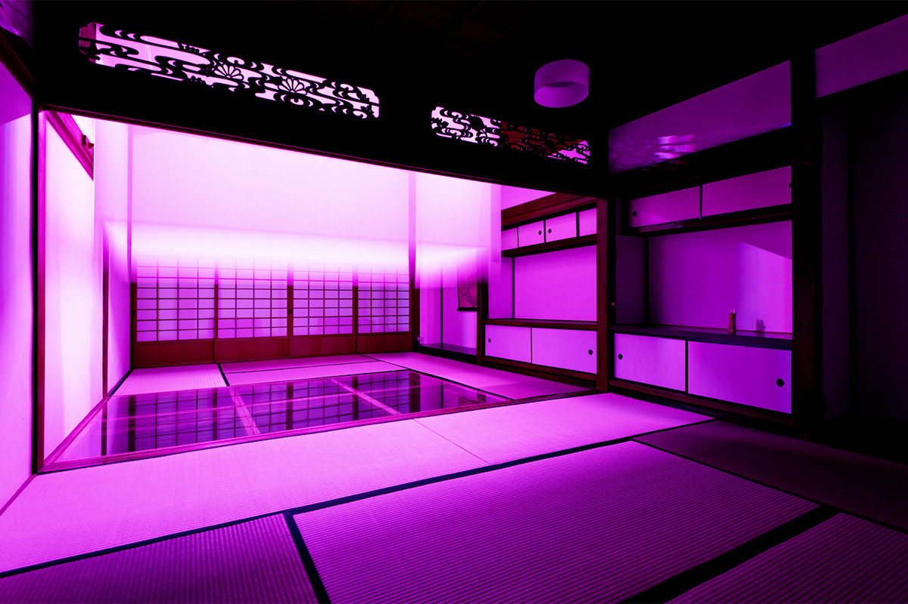
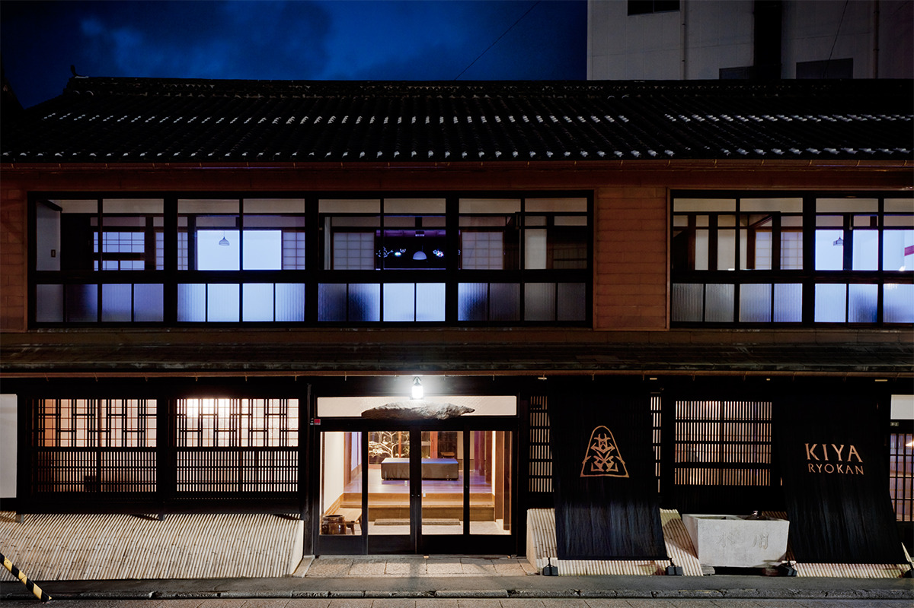
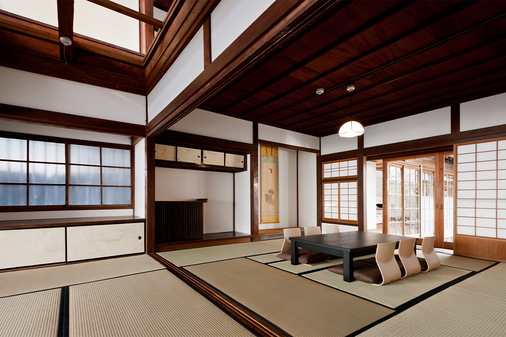
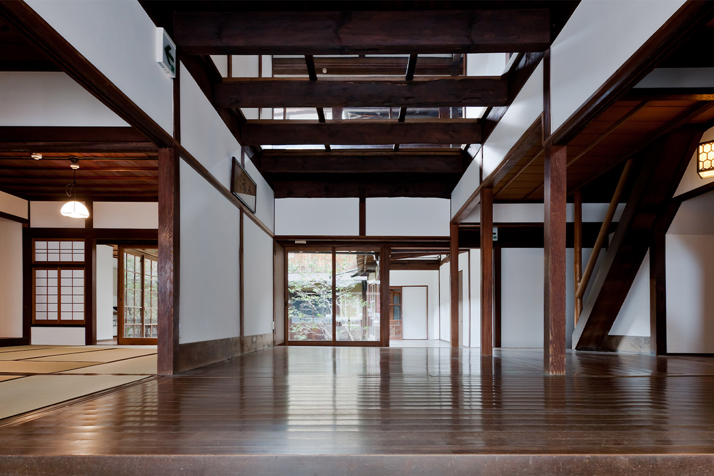
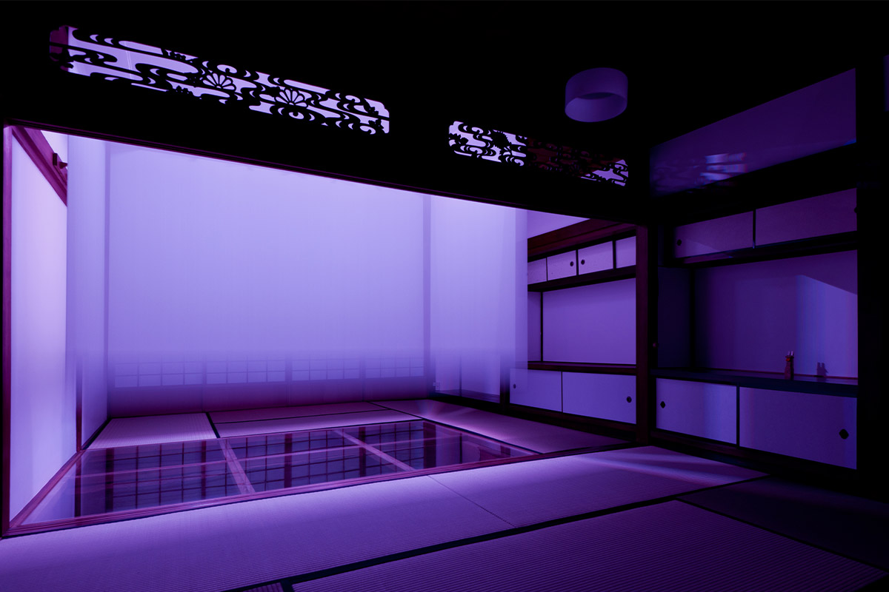
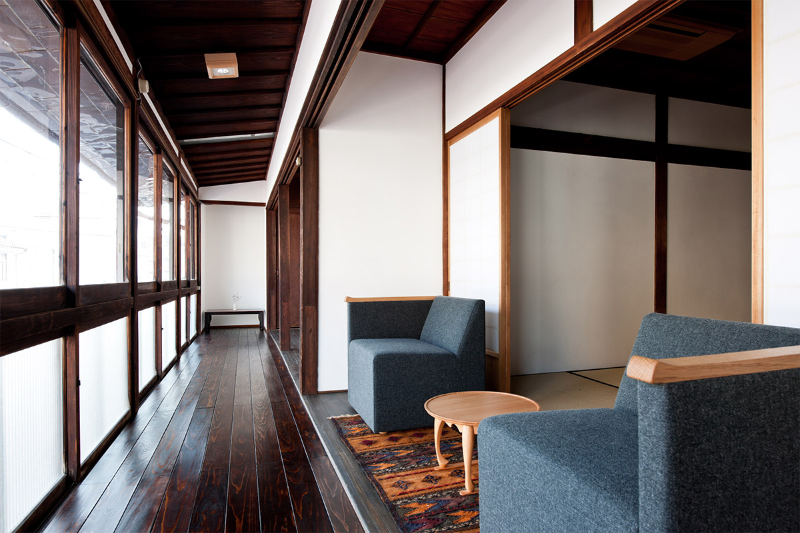
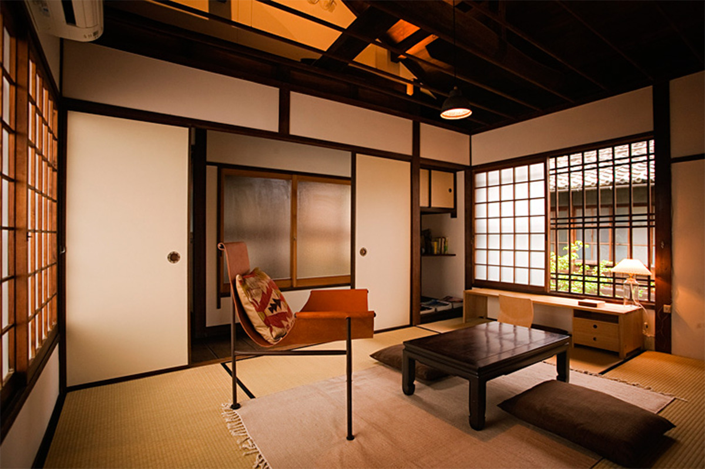
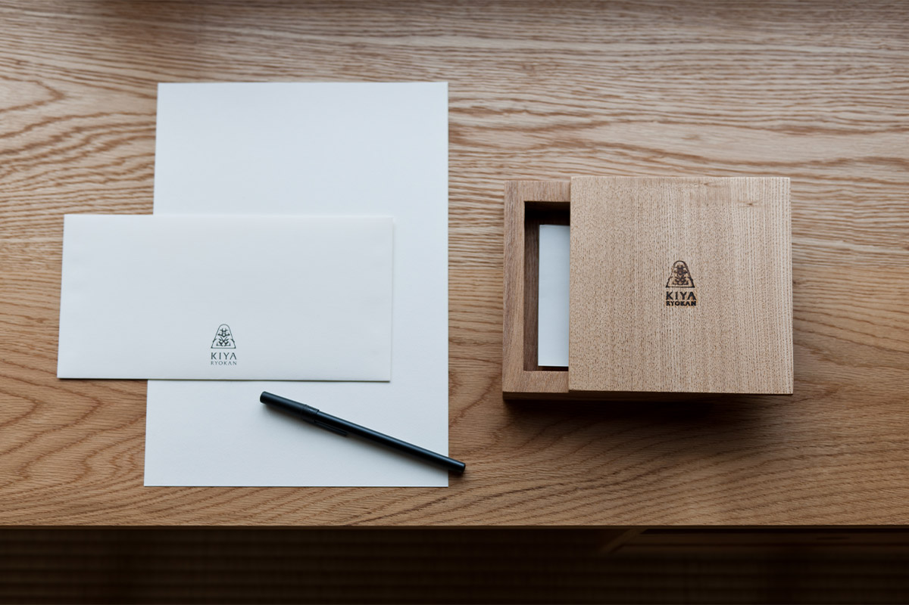
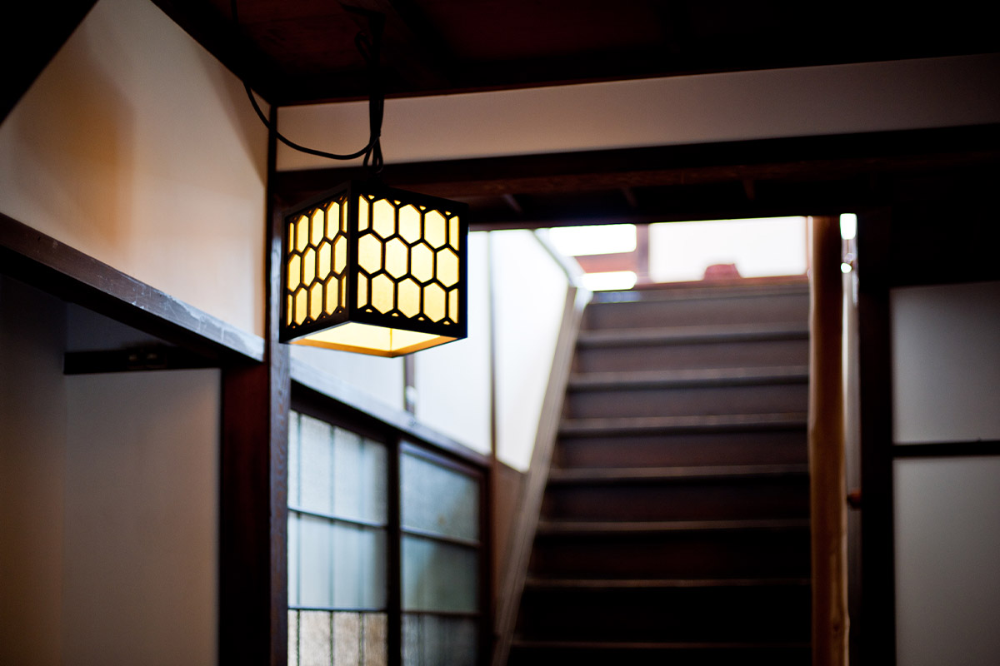

Префектура Эхимэ · Увадзима · отель
Рёкан «Кия» в Увадзиме: целый дом для одной компании

В центре Увадзимы стоит деревянный дом, где больше века назад принимали знаменитых гостей, а потом на двадцать лет закрыли. Сегодня «Кия» сдают целиком: одна компания, четыре комнаты, кабинет и прозрачный пол на втором этаже.
История
Дом, который вернули
Рёкан «Кия» открылся в 1911 году и быстро стал местом, где останавливались известные люди. Здесь бывал Цуёси Инукай (1855–1932), политик, который в 1931 году стал премьер-министром Японии. Останавливался и Симпэй Гото (1857–1929), государственный деятель эпохи Мэйдзи, при котором перестраивали Токио после великого землетрясения 1923 года. Гостем рёкана был и писатель Рётаро Сиба (1923–1996), автор самых читаемых в Японии исторических романов. Бывали здесь и другие литераторы и учёные.
В 1995 году из-за ветхости здания рёкан закрыли. Двухэтажный деревянный дом с чертами эпохи Мэйдзи законсервировали, и только в 2012 году он снова открылся как гостиница.

Интерьер
Дом с характером
Обновление дома доверили архитектору: проект вернул дому вторую жизнь и получил статус зарегистрированного материального культурного наследия страны.
Планировка осталась прежней: на первом этаже три соединённые комнаты и большая ванная, на втором четыре комнаты и кабинет, санузлы на каждом этаже.

Гостей встречает вход с каменным полом и порогом, у которого сохранился фонарь времён основания рёкана.

Дальше начинаются сюрпризы. Часть пола на втором этаже сделали прозрачной, а потолочные панели убрали, поэтому от первого этажа видно вплоть до балок под крышей. В четырёх комнатах второго этажа с потолка по команде с пульта опускаются экраны, а светодиодная подсветка окрашивает их в разные цвета и превращает комнаты в световые инсталляции.

Побыть в тишине можно в коридоре второго этажа, где кресла развёрнуты к внутреннему двору.

Как живут
Весь дом в вашем распоряжении
«Кия» принимает только одну компанию в день, от двух до десяти человек. На входе выдают ключ, после чего дом можно занимать как угодно: сотрудники на ночь не остаются. Именно это ощущение предоставленности самому себе здесь считают главной ценностью.
В кабинете на втором этаже исторические детали соседствуют с современной мебелью. Здесь есть письменный стол: гостям предлагают записывать впечатления от поездки на бумаге, как это делали писатели, останавливавшиеся здесь прежде.


Дом рассчитан на спокойный вечер: в комнатах есть футоны, холодильники, телевизоры, обеденный стол, аудиосистема с Bluetooth и Wi-Fi.

Рёкан «Кия»
- Адрес
- префектура Эхимэ, Увадзима, Хонтё-Оотэ, 2-8-2
- Телефон
- +81 895-22-0101
- Часы работы
- бронирование по телефону 10:00–18:00
- Вместимость
- от 2 до 10 человек (при 11 и более гостях нужна предварительная договорённость)
- Цены
- от 33 000 иен за ночь за дом плюс 6 600 иен за человека (с налогом, без ужина, лёгкий завтрак включён; в сезон дороже)
- Заезд
- 15:00 / Выезд: 11:00
- Как добраться
- 15 минут пешком от станции Увадзима линии Ёсан; около 10 минут на машине от съезда Увадзима-Асахи
- Сайт
- kiyaryokan.com